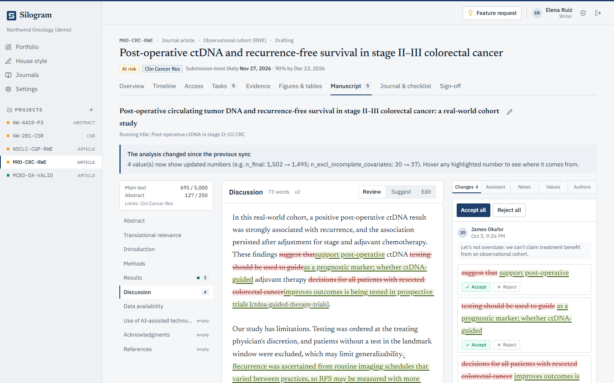
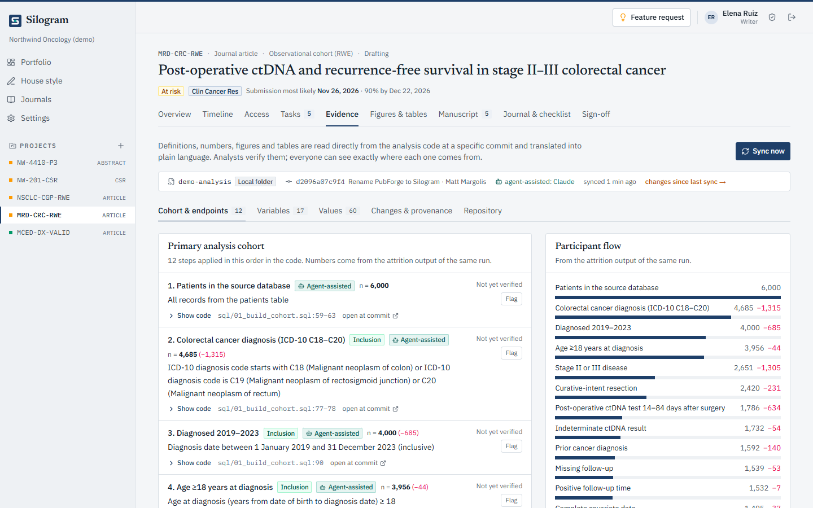
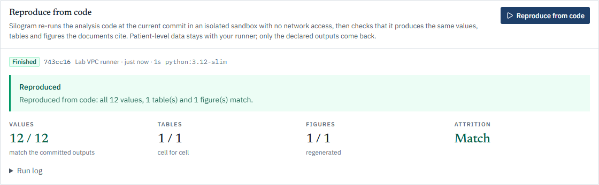
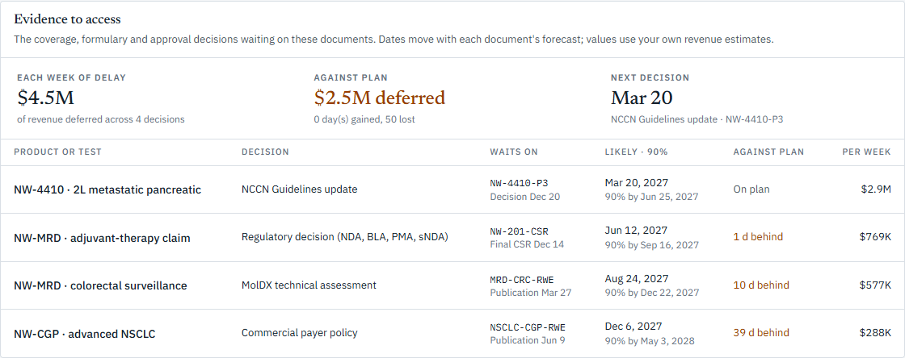

After the readout, every document at once
- Top-line abstract, CSR, manuscript and Module 2 from one locked analysis
- NCCN, formulary and EU joint assessment dates tied to each document
- Code and output ready for HTA appendices
For mid-market pharma, biotech and diagnostics
Silogram turns the SQL, R and Python in your analysis repository into manuscripts, abstracts, clinical study reports and payer dossiers, with every number linked to the code that made it, or flagged until it is.
Designed to support 21 CFR Part 11 and HIPAARead-only access to your repositoryNever trains AI models on your documents

Built to the standards your reviewers check
Writers, statisticians, reviewers and agents work from the same verified definitions and values. When the analysis changes, every document shows what moved.
Every number in the text is a live value from the analysis, with its file, line and commit one click away. Typed numbers are flagged before sign-off.

Silogram reads the SQL, R and Python and writes each eligibility step, variable and endpoint in plain language, with the patients left after each step.

A runner re-runs your analysis at a commit in a sandbox with no network access and checks that it produces every value, table and figure the documents cite.

Link each document to the coverage, formulary, guideline or approval decision it supports. See when it is likely and what a week of delay costs.
From the repository your statisticians already use to a signed document your reviewers can trust.
Point Silogram at the Git repository that holds your SQL, R and Python: GitHub, GitLab or Bitbucket, with a read-only token.
Writers and approved agents draft in your house style. Each number links to an analysis value or gets flagged; reviewers suggest, writers decide.
Approvers sign a digest of the exact text, the document locks, and the access plan shows when the decision it supports is likely.
Change a number once. Every document shows what moved.
Formulary dossiers prefer peer-reviewed studies. NCCN Category 1 needs a publication. Medicare's molecular test program pays from the date a test passes its technical assessment.
median from an oncology results press release to the full paper.1
of FDA cancer drug approvals in 2010–2014 had no peer-reviewed efficacy paper within 30 days.2
before an NCCN panel meeting is the deadline for outside submissions.3
for a MolDX technical assessment once the published evidence is in place.4
Mid-sized teams carry big-pharma evidence loads: one readout or validation study becomes a stack of documents, all due at once.
No. Silogram reads code and aggregate outputs. Workspaces default to no PHI, and a scanner blocks likely patient identifiers. When you reproduce outputs from code, the runner sits inside your network next to the data; only the declared outputs come back.
Any model your company has approved, with your own keys, and any agent that speaks MCP or REST. Agents read verified context; everything they write arrives as a tracked suggestion that a person accepts or rejects.
Silogram is designed to support Part 11 and HIPAA: an append-only audit trail, electronic signatures bound to the exact text signed, approval locks and access controls. Compliance also depends on your validation and procedures, so we provide the requirement list, test evidence and templates.
No. Your documents and house style stay in your workspace and are never used to train models.
Ninety days on one live document. We connect its analysis repository with a read-only token, learn your house style from past papers, and measure the time from locked outputs to submission against your recent history. The pilot fee is credited to an annual plan.
Copying numbers from tables into Word, re-checking them by hand, and tracking plans in spreadsheets. It works alongside your writers, agencies and statistics team rather than replacing them. See how it compares.
A 90-day paid pilot on a live manuscript, abstract, CSR or dossier, connected to its analysis repository with a read-only token.